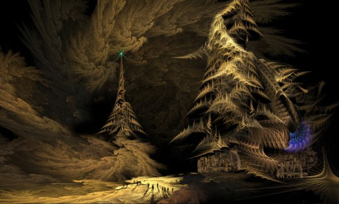

Embrace the Night (Part 3)
by
Tais Teng
They crossed a field of flowers that glowed a sickly green in the dark. Through the center a brook ran. It even murmured.
"Don't drink the water here," Lurella warned. "It is sulfuric acid, welling up straight from the deeps. It would burn your lips right off your face."
Three hours later they reached the road. It seemed to stretch forever, dull slabs of what looked like dusty ice. In their depths webs of cold light flickered.
"Our roads were meant to last forever," Lurella said. "Programmed diamond, laced with palladium. Self-repairing, but the last three million years they keep forgetting." She sounded a bit chagrined.
Only a mile down the road two night-hounds jumped from the shrubs, skidded across the road and bounded in their direction. Five more followed.
"Ah," Lurella said, "there comes dinner!"
She raised her hands and a wave of absolute silence spread across the road, and froze the night-hounds in the middle of their run. They probably screamed but the stillness held, became horrible, as if time itself had stopped and Marat was drowning in dust.
She put her hands down and sound returned. This was the first time that Marat was happy to hear insane laughter rolling across the hills or the lamentations of the Country of Wailing.
"We don't eat meat," Dunja protested. "Eating somebody's flesh is almost as bad as eating their souls."
"You'll learn to like it," Lurella told her. "You left all your way-food standing on the other side of the Air Clog."
When Marat's watch told him the hour of sleep was long past they halted and started a fire of dried lichen and the dung of night-hounds. Lurella hung a will-o'-the-wisp in the air and took a flute from her pouch. A tune drifted across the rolling hills, telling of golden cities far and the mighty sun, glorious as a ruby in the slowly darkening sky.
Dunja had fallen asleep the moment her head touched the self-inflating pillow.
Marat sat staring in the blue and green flames, almost hypnotized, when Lurella touched his shoulder and offered him an apple. "This is the Pomegranate of Long Life. It stops you aging, kills all known viruses."
The pomegranate was an improbable red in the glow of Lurella's wisp, with a waxy skin. It did look artificial and quite poisonous.
"Eat it. I don't want you growing old, with all your teeth falling out, before I have properly enjoyed you."
"You have one for Dunja, too?"
"I found its tree growing in the hull of a crashed star-ship. It bore a single fruit and died when I plucked it." She put the apple in his hand. "Let's make a deal. You rule the Lesser Redoubt for fifty years, with her as your consort. Then you are mine." She closed his fingers on the apple. "Come on. Don't you trust me?"
"Of course I don't trust you. But there are easier ways to kill."
He bit into the fruit. The juice ran down his chin and the taste was tart, with the pips hot as pepper when he crunched them between his teeth. He wiped his lips. "I am immortal now? I don't feel any different."
"Not immortal. You won't age, but any night-hound could still kill you."
He touched his diskos. "Just let them try!" And then he realized he felt different after all, stronger, fearless. I am a hero now. A hero can be killed, will probably killed in quite a horrible way, but old age will never claim me. He looked down at his sleeping lover. Fifty years I'll be yours, Dunja, true as any husband can be. I won't kiss at any other woman's lips, even when your face is all wrinkles and you keep forgetting my name.
"Fifty years," his true love repeated, "and then you are mine."
When she turned away to gaze down the road, he spat a tiny pip in the palm of his hand. Always keep your options open, and all heroes were tricksters anyhow. At least the ones that survived.
Traveling the Night Land with a Power was most instructive. Once a pair of giants paralleled their road but decided not to attack. When they turned Lurella raised her hands and pulled the smaller one back in an invisible net of silence. For hours the giant stood at the edge of the road, quivering, his eyes turning dull while the mistress of the House fed. He finally sank to his knees and crumpled.
"You drank his soul," Dunja said. Her voice was filled with horror. "You destroyed him. Took so much he won't ever be reborn."
"I was made as a weapon, gene-tailored by the Road Makers to fight the pneumavores." Lurella shrugged. "But you know how it goes. Fight an unbeatable enemy for centuries and you become just like them. I still hunt darklings, but a girl has to eat, too."
"I see. You are just like the manshonyaggers. A living weapon gone feral."
"How harsh." She smiled.
"But you are much more beautiful than a manshonyagger." Dunja sighed. "I wouldn't bother me so much if you looked like an old witch."
There are many kinds of love and even more kinds of lust. When Marat returned from an erl-mouse hunt he found the two girls entwined and grunting. He didn't for a moment believe they were fighting.
He stepped back in the darkness and made sure he made some pebbles rattle when he returned half an hour later.
Things you don't talk about seldom become a problem, he had concluded when he was about five, and that still held true.
Marat, age 21
Seventy-five miles to the House of Silence doesn't seem all that great a distance, especially with a wide road leading straight to it. But this was the Night Land and even with an ally as powerful as Lurella they had to make many detours. Also, time and space seemed different here. Sometimes they passed the same shrub after trudging for three days, with the remains of a fire they had left still smoking. A fire moreover that Marat was quite sure he had stamped out.
"Tomorrow," Lurella said six weeks later, "tomorrow we'll reach the House of Silence. Then it is only a few months to the Lesser Redoubt." She leaned against a boulder, gazing up into the dark sky. Marat sat down next to her.
"What are you looking at?" To him the sky seemed completely featureless, a smooth velvet dark.
"The sun. She has gone out, but I can still see her against the background of living galaxies. She has shrunken since my time, no larger than a balled fist when she once filled half the sky."
The next morning the road turned to the left and they saw the House of Silence standing on its razor-edged hill.
"All your windows are dark," Marat said.
"I am not there," Lurella said. "No reason to lure prey."
Steps led down to a sunken entrance. There was an iron portcullis with a twilit garden in the distance. Stone faces bordered the gate. Every time Marat looked away they changed but all seemed in agony, their teeth bared or lips opened in a soundless scream. Well, no victim can complain he wasn't warned in advance, Marat thought. It had felt safe on the road, knowing that nothing worse roamed the darkness than walked right beside you.
"I have to take some precautions." Just in front of the entrance Lurella drew a chalk circle around them, hung a will-o'-the-wisp above them. "Stay inside the circle if you prize your life and soul. I have to revert to my basic shape to replenish my powers. It is quite brainless, all reflexes. I would destroy you instantly if I found you in one of the rooms."
"We'll sit down quietly," Dunja assured her.
The moment Lurella stepped inside, all lights came on. Almost instantly the rustling started. Lizard-mice ran inside, a wave of coral-snakes and winged toads came next. A giant stepped past, turned an imploring gaze on them. His maned lion face was a mask of pure panic. Three Silent Ones followed.
"She is a monster," Dunja stated.
"She is our monster. We have been hunting, too."
"What we eat, we don't destroy. Anything with a soul will be reborn." She nodded. "We are just lending their bodies, but Lurella devours their very souls."
When Lurella returned she was glorious. It was as if she walked in an invisible bundle of sunlight. Each step seemed to lift her from the ground.
"I am ready to go now," she said. Behind her all candles were snuffed out, leaving the House once more dark and still.
The road seemed almost like home after all those days of trudging across its diamond slabs.
"There is something I don't completely understand," Dunja said. She had promoted herself to official navigator and unrolled Lurella's master-map. With every passing mile it had grown more detailed and kept correcting itself. "Only three months to the Lesser Redoubt, you just said. Now, according to this map, which you insist is accurate, we haven't covered even a tenth of the distance."
"More like a hundredth. I was running low when Marat finally deigned to show up. You need a lot of power to wake a hibernating manshonyagger."
"A manshonyagger?" Dunja cried. "You must be crazy!"
"They make good steeds. And about being crazy, yes, that helps when you want to ride a manshonyagger."
They walked for half a mile before Lurella stepped from the road and followed an almost invisible trail. It was in fact more like the opposite of a trail: here the mosses grew markedly higher, with their green glass flowers almost as big as fists. These flowers were filled to the brim with the sweet liquor that normally attracted night-hounds from a hundred miles around.
This is a path all living creatures avoid, Marat understood, a direction no-one will take.
"He is still there," Lurella said when they topped a hill. "I wasn't quite sure. It has been such a long time. At least half a million years."
They looked down on a clearing in the moss. A mound of land coral rose from a field of shiny pebbles. Trophy-racks surrounded the field like an amphitheater, row after stepped row. Thousands of wrinkled masks hung on the pegs and clattered in the warm breeze.
Marat raised his night-glasses. No, not masks at all. They must be flayed faces, dipped in formaldehyde and then petrified by the sulfur breeze. All of the tanned faces were human, Marat saw, but mostly of races long since discontinued by the Eugenicists.
"He hunts humans," Lurella said. "That is what his original name means. Menschenjäger, hunter of men. He kills other creatures but only true humans are worth collecting. After a hunt a manshonyagger had to show his commander the flayed faces of his victims. The lowest manshonyaggers were called 'hundred-face-heroes', their marshals 'million-lords'." She knelt at he edge of the field, took one of the shiny pebbles. "The crystallized eye of a victim. Another way of keeping count."
The eye seemed still fresh, with the blood vessels tiny red trees against the eye-white. Lurella held it next to Dunja's face. "The iris is the same green, my dear. Perhaps an ancestor?"
Dunja snatched the eye from Lurella's hand, threw it over her shoulder in the moss. "No ancestor of mine. I'm standing right here. He never ate my great-grandmother."
"You are quite right. You must be the improved model."
Lurella reached in the air and a control panel appeared, all glowing lines and cursive machine-script. She touched three pulsing nodes, spoke a sentence that was mostly hisses and dry clicks, then typed it again on the floating keyboard.
"Keep your diskoi ready. The Command of Restraint sometimes changes spontaneously." She waited until their weapons announced their readiness with a shower of violet sparks, then hit the hooked Enter symbol.
The mound shivered, burst open. Eight legs flailed around, straightened. The manshonyagger was constructed from almost indestructible adamant, steel-blue with cinnabar veins. Three heads rose on flexible necks, turned in their direction. The heads were featureless: no trace of eyes, no nose or mouth. Marat could guess the reason and it gave him a sinking feeling in the pit of his stomach. This must be a machine from the Age of Martyrs, made to terrorize, not a clean killing machine at all.
"I can kill you," the manshonyagger stated. His voice was a pleasant baritone.
"You can try," Lurella agreed.
It must have been the right answer because all three heads nodded. "You are a Road Maker. Road Makers are almost as pure as the Root Race. It would be a honor to serve you, commander. There are some conditions, though."
"State them."
"It will take me three months to convey you to the Lesser Redoubt. At the end of two months I'll kill the other woman and take her face, even if she isn't really a true human but of an indeterminate race. When we arrive you'll fight me and I will take your face."
"Hey!" Dunja cried. "You are talking about me. You can't..."
Lurella put a finger to her lips, smiled. Marat felt a pulse of pure night-thought pass between the the two girls. It was intense and two-way. He didn't catch a single word, of course.
"I agree," Lurella said.
"Yes, it is all right," Dunja said.
"You may call me Wolf. The freeze-dried brain of a wolf-spider forms my control-node. The wolf-spider was the most savage hunter of the sun-lit times." He extruded three leather seats, sank down on his belly so they could mount him.
Ay, to ride a manshonyagger with your arms wrapped around the slender waist of a real Road Maker girl! Dunja sat in the front-seat, her map unrolled on her lap, shouting directions. It didn't seem to matter that there was only a single road and a straight one at that: Dunja was the Official Navigator.
Even Yalib al-Murad would envy me now. No less than two beautiful wives and the Lesser Redoubt hosts at least a hundred cities, each more splendid than Yalib's fabled Baghdad.
The land was now rushing past too fast to gather kindling or to hunt. Below them the diamond slabs became a blur.
A mountain chain heaved itself up from beyond the horizon. Even from the Tower that had been at the limits of vision. Beyond lay mythic lands, with all Redoubt maps mere hearsay and conjecture.
The mountaintops opened up in a valley and a twilit slope seemed to reach all the way to the sky. The ruins of what must have been a city of billions were outlined by dancing ulfire. The light died down and slipped to the edges of his vision the moment Marat tried to focus his night-glasses.
"Those lights are Earth remembering," Lurella declared. "Mother Gaea weeping for the cities she once wore as a shining mantle." It sounded like a quote and probably was.
"End of the Road," the Wolf announced and came to a screeching halt. The last diamond slab lay broken on the bottom of a crater. The raised rims were made of cracked black glass. "A sky-hammer strike. It must have got the diamond-weaver that was laying the road." He gingerly touched the glass with a feathered feeler, jumped back.
"Still radioactive?" Lurella asked.
"Not a good place to camp. Especially for organic creatures. Which I am at least partly."
They halted in the shelter of dozen fallen columns.
"Anybody for erl-mouse soup?" Marat called.
It was almost a ritual by now, with everybody doing his or hers assigned task. Marat put a grain of powdered water in their cooking-pot and the container instantly filled with liquid condensed from the air.
Lurella tapped the crystal beneath the pot and the diamond started to glow, became red hot. Dunja had meanwhile been chopping the tough bitter-roots.
After their dinner they mounted again. Wolf remolded their seats and turned them into feather-soft beds.
That night sleep eluded Marat for a long time. Up-slope the dead metropolis burned and he heard plaintive voices, snatches of songs. Both of the girls slept soundly, Dunja with her diskos across her belly and her map safely pushed between her breasts. One of Lurella's eyes remained open and scanned the surroundings, even while asleep. Road Makers dozed like hares, with only one part of their brain resting and the other half ready for instant action.
Wolf raised one of his heads, looked back.
"They must love you deeply, consenting to give their lives for you."
"Dunja, you mean?"
"And the other one. She is a Road Maker plus, upgraded. Still, no human has ever defeated me."
"There is first time for everything."
"That is one of the things that keeps me going. The hope that some day I'll find a worthy enemy. One powerful or cunning enough to give me a hero's death." There was a pause. "My designers made me blind and deaf, you know, without the sense of taste."
"Yes?" This is so crazy, he thought. What am I doing here, listening to the complaints of a manshonyagger who is going to kill my lovers?
"When I take a face, Rabath, I can wear it like my own. Connect it to my own nervous system and look through human eyes, smell the night. Taste salty blood and bitter ash. I can be human until it starts to rot."
"Human isn't all it is rumored to be. Now let me sleep."
When Marat woke the fourth morning they had crossed the slope. In the distance a dark forest was laid out, with an ocean to the right. The ocean was dotted with calderas. The water must be quite hot, boiling even, because it shone with ulfire.
"We called it the Gulf of Ramora," Lurella said. "When a girl went courting she raced her lovers on a wind-kite made of black glass." She closed her eyes and Marat wondered if she saw her own nuptial race. She, the most beautiful girl of her city, with a dozen lovers in pursuit. "There were star beasts from Arcturus and great white whales to hunt. After a hunt we drank their steaming blood."
The Road Makers had been gentle philosophers, according to Marat's teacher. If Lurella was in any way typical that had been a huge misunderstanding.
The trees of the forest closed in on the speeding manshonyagger, so he had to zigzag, jump across tangled roots. The trees were like living mountains, their tops so high they seemed to touch the very center of the sky. Voiceless birds fluttered past, with gauze-lined maws to filter plankton from the air.
Lurella threw her own net of silence and hauled in a dozen for the cooking-pot.
"There should be a crashed ship somewhere," Lurella said while she shook her net and dropped the dead birds on the road.
"A star-ship?" Marat asked.
"No, from much more recent. Just something with wings. We had lost the secret of space-travel by then."
"I see it," Dunja said. "On the map I mean." She spread her fingers to zoom in. "It looks like a crushed butterfly."
"They were sentient and quite fierce. Good at chess, too."
But when the road crossed the place they found only tree-covered hills, with a sprinkling of jale flowers.
Lurella frowned.
"The last time...Wait, those flowers must be metallivores. They love all rare earths and ultra-heavy metals." She clacked her tongue. "Somebody should exterminate them. That ship was a goddamn monument."
"Will there be anything dangerous, later?" Dunja asked. "The map mentions monster slugs, humpbacked men and bird-creatures."
"They are dangerous enough, but for me they are just ingredients for our cooking-pot."
"Wings might be nice to collect," Wolf mused. "And I have never seen the world through the eyes of a bird."
Dunja folded the map. "So we just lean back and enjoy the show."
"I was only speaking for myself. Keep your diskoi ready. I can't be everywhere at once."
They didn't see any humpbacked men, but the monster slugs attacked just in time. They were down to their last dried erl-mouse.
Mountains again and the map put a blue spark at the foothills. The spark grew a dotted line all the way to the dried sea where the Lesser Redoubt rose.
"A tunnel," Lurella said. "Go down that gorge, Wolf."
A half circle of vitrified bones and broken skulls surrounded the dark entrance. None of the skulls was even slightly human. All showed the tell-tale burn-marks of a saker. It was the kind of light-gun Marat only knew from Road maker tales.
"Speak the master-word," a voice whispered right into Marat's brain. "Speak the master-word or turn back." One of the ten meter high statues that flanked the entrance lifted his saker. The single lens was the size of a giant land-squids eye.
"Your turn," Lurella said to Dunja. "This body, it isn't exactly human."
"The word," the guardian repeated and pointed his weapon at Lurella. The beam of a saker could be focused. Sharpshooters were able to sever the leg of a cockroach at ninety paces.
She can get her rival killed. Dunja has only to hesitate a few seconds more. Marat cried the master-word at exactly the same second Dunja spoke it.
"The word is right." The statue became stone again.
"A moment before we go inside?" Wolf said. "I have been counting. Keeping score. This the first day of the third month. The human girl is mine." One of his arms instantly grew a flaying knife.
"I think you made a mistake," Lurella said. "The number of days of a month..."
Marat reached for his diskos but he knew it would be too late. That pesky delay before it reached full power. And a diskos against an adamant manshonyagger? Who was he kidding?
"No mistake!" The manshonyagger sounded aggrieved. "No mistake at all. I was even generous. I used a thirty-one day standard-month."
"Still...Let me have a look at your timer." A swift gesture and Wolf's control panel hung in the air. "Give me the timer."
"62 days 0 hour 3 minutes 34 seconds" appeared in urgent violet.
Lurella's left hand stabbed a control node and the whole panel turned red. "Reset to zero," she cried and the panel glowed a soothing mint green once again.
The manshonyagger staggered, looked at the gleaming knife and retracted it.
"I seem to...What was I saying?"
Lurella banished the control panel with a wave off her hand. "Nothing important." She nodded to the entrance of the tunnel. "Shall we enter?"
The manshonyagger galloped through a seemingly endless tunnel. The Road Makers had painted the ceiling with long extinguished constellations.
Lurella pointed them out: "That cross we called the Double Axe. Around the yellow star to the left a dozen living worlds orbited, with blue seas and purple continents. Of course, we wanted them. So we fought a beautiful war with the Sal Hadre. Almost three thousand years of valor and brave and horrible deeds. Until a new enemy appeared who attacked us both."
"The Eaters?"
"The Eaters didn't come from anywhere extraterrestrial. That was just a self-serving lie later generations told themselves. The Eaters, that was us."
"But..."
"The sun was the first star to die." She smiled. "A bit of a coincidence, eh? No, look at the Night Land. At all the evil, the monsters. Only there are no unholy monsters, there is no evil from beyond the stars. Only us humans."
It took them a week to cross the tunnel. There was no glowing exit, of course, no steadily growing circle of daylight. The stars just vanished and they ran under the black sky of the Night Land again.
This was the most desolate of deserts, an ancient sea bed with a thick crust of salt. Fumaroles spewed poison gas and halfway lay the ten mile long wreck of what had once been the sea-going palace of Chairman-Emperor Carnacki. The Lesser Redoubt painted a black silhouette against a haze of fire.
Living there the sky would always be burning, Marat thought. It wasn't exactly daylight, but there was no night either. I am Rabath, the Rabath and I will be king there.
"No trace of Watchers here," Dunja remarked.
"It just isn't worth their while," Lurella said. "There are twelve million humans inside at most."
Ten miles from the pyramid Marat saw the first darkling staring at the single light on the very top of the pyramid. Staring enviously, he thought. It hates us for the light and warmth that is inside.
The darkling had the body of a giant but the head was wrong, far too small for intelligence, and it perched on a long snakelike neck. Marat noticed a second monster, then a dozen.
A whole army of monsters encircled the Redoubt. An infinitely patient army, waiting for the earth current to fail and the gates to crumble.
"This is as far as I go," Lurella said. "Their current cannons are quite powerful and set to fire even beyond the Air Clog."
"You want us to ride the manshonyagger ten miles through an army of monsters?" Dunja asked. "Why did you take us this whole way? You could have killed us right in front of the Redoubt."
"Army of monsters?" Lurella raised her hand. "What army of monsters?" and from her fingertips spiraled a stillness, an unsound so deafening that time itself stopped.
The whole army went down like a million stalks of corn in a screaming hurricane. Went down and didn't rise again.
"Don't look back," Lurella warned. "I am burning too bright. Looking me into the eye you would go insane."
"You arrived!" The manshonyagger crowed. "I brought you here. Now you must fight me, Lady Lurella."
"I will kill you," the mistress of the House of Silence warned him. "Just a touch would shatter your adamant, burn even your glass fiber nerves."
"A hero's death. Such is my fondest wish. Fight me."
"She drank them all, smashed Wolf like he was made of eggshell," Dunja whispered while they walked through the rows of slumped monsters. Her voice was hoarse with horror. "She is so powerful, she could have sucked the Redoubt dry. The Air Clog wouldn't have stopped her for a second."
"I would never do such a stupid thing," Lurella's voice ran in their head, a voice like the tolling of bronze bells as huge as mountains. "I am a farmer of men, not a rabid wolf."
"You fed well," Marat said.
"Better than I ever did, my true love. It was such a great wedding present you gave me."
The pyramid drew closer and Marat could hear the sound of sirens. Lights ran up and down the sides of the Redoubt.
"They seem to have noticed us," Dunja said.
They stepped through the Air Clog and were confronted by a platoon of manshonyaggers, guild masters and Censors. Cannons turned in their direction, with the earth current dancing around their muzzles.
"Peace," Marat raised both hands. "I am Rabath. Rabath reborn and I come to rule you." He nodded to the killing field, the dead monsters. "This is proof enough, I hope?"
A Censor gaunt as a scarecrow was the first to touch his right ear and bow. "I greet our high lord, Rabath reborn." He laid his diskos at Marat's feet.
Dunja hooked her arm in Marat"s. "And I am his queen Dunja."
Image and story © 2011 by Tais Teng.